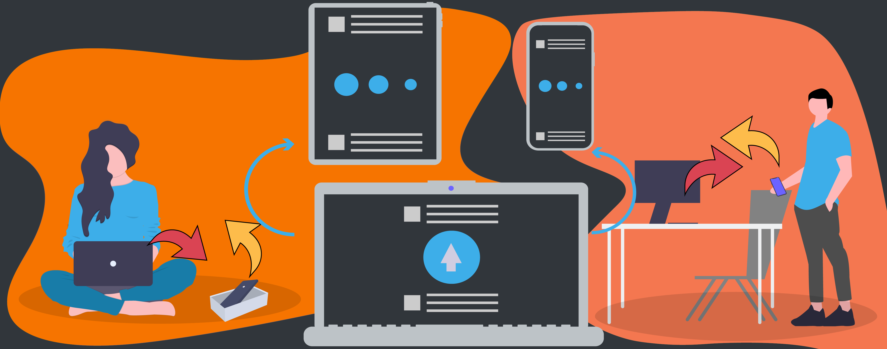
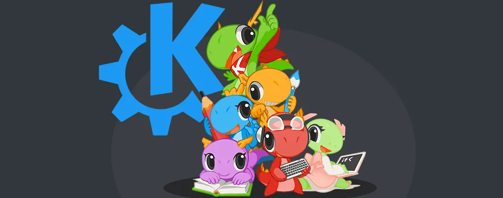

<!-- To Expand this page add the new feature on top with required attributes. Also add the required css for each class. -->

<!--HTML-->
<!-- Hero of the page. -->
<section class="feature main dark mb-0 pt-5">
  <h1 class="connect mx-3">KDE Connect</h1>
  <h2 class="connect-desc mx-3">
    Enabling communication between all your devices. Made for people like you.
  </h2>
  <div>
    <a href="download.html">
      <button class="button download m-3" type="button">
        Download
      </button>
    </a>
    <a href="https://www.kde.org/donate">
      <button class="button donate m-3" type="button">
        Donate
      </button>
    </a>
  </div>

  <picture>
    <source srcset="assets/img/hero_main.webp" type="image/webp" />
    <source srcset="assets/img/hero_main.png" type="image/png" />
    
  </picture>
</section>
<section class ="mt-3 mb-0" id="videosection">
 <iframe class="m-0" width="560" height="315" sandbox="allow-same-origin allow-scripts" src="https://peertube.mastodon.host/videos/embed/f8ffd8de-3df5-46b5-bbe3-114393be4b44" frameborder="0" allowfullscreen></iframe>
</section>

<!-- Loop that loops through features.-->
{% for feature in page.features %}
<section class="{{feature.class_name}} my-3 pt-5">
  <h1 class="{{feature.h1_class}} mx-3">{{feature.h1_content}}</h1>
  <h2 class="{{feature.h2_class}} mx-3">
    {{feature.h2_content}}
  </h2>
  <div>
    <a href="{{feature.linkref}}">
      <button class="button learn-more mt-4" type="button">
        Learn More
      </button>
    </a>
  </div>
  <picture>
    <source srcset="{{feature.webp}}" type="image/webp" />
    <source srcset="{{feature.png}}" type="image/png" />
    
  </picture>
</section>
{% endfor %}

<!-- Bottom Header-->
<section class="feature download bottom dark my-3 pt-5">
  <h1 class="madebyyou mx-3">Made for people like you.</h1>
  <h2 class="madebyyou-desc mx-3">
    Open Source. Free to use. For any purpose. Forever.
  </h2>
  <div>
    <a href="download.html">
      <button class="button download2 m-3" type="button">
        Download
      </button>
    </a>
    <a href="get-involved.html">
      <button class="button getinvolved m-3" type="button">
        Get Involved
      </button>
    </a>
  </div>

  <picture>
    <source srcset="assets/img/madebyyou.webp" type="image/webp" />
    <source srcset="assets/img/madebyyou.png" type="image/png" />
    
  </picture>
</section>

<div class="row no-gutters grid pr-2 pb-3">
  <!-- Loop for Boxes.  They can be added on the top. -->
  {% for box in page.Boxes %}
  <div class="col-md-6">
    <div class="{{box.class_name}} m-2 pt-4">
      <h3 class="mx-3">{{box.h3_content}}</h3>
      <h4 class="mx-2">{{box.h4_content}}</h4>
      <div>
        <a href="{{box.linkref}}">
          <button class="button learn learn-more mt-2" type="button">
            Learn more
          </button>
        </a>
      </div>

      <picture>
        <source srcset="{{box.webp}}" type="image/webp" />
        <source srcset="{{box.png}}" type="image/png" />
        
      </picture>
    </div>
  </div>
  {% endfor %}
</div>
